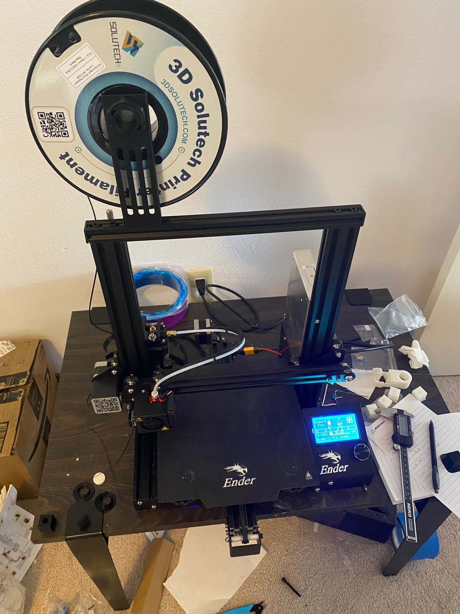
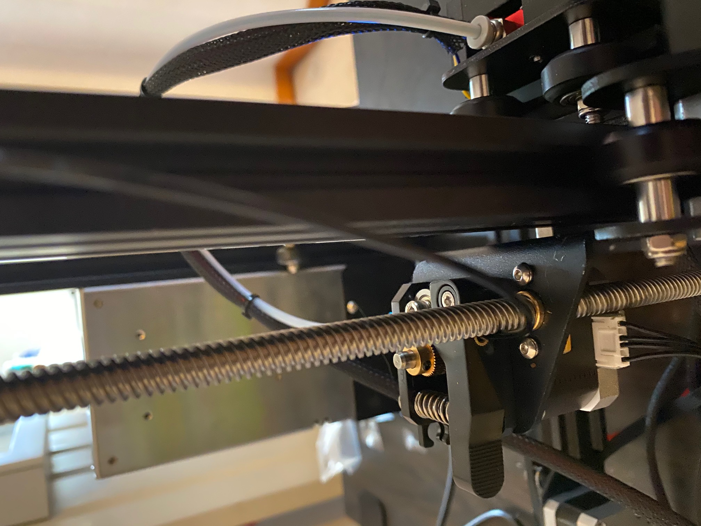
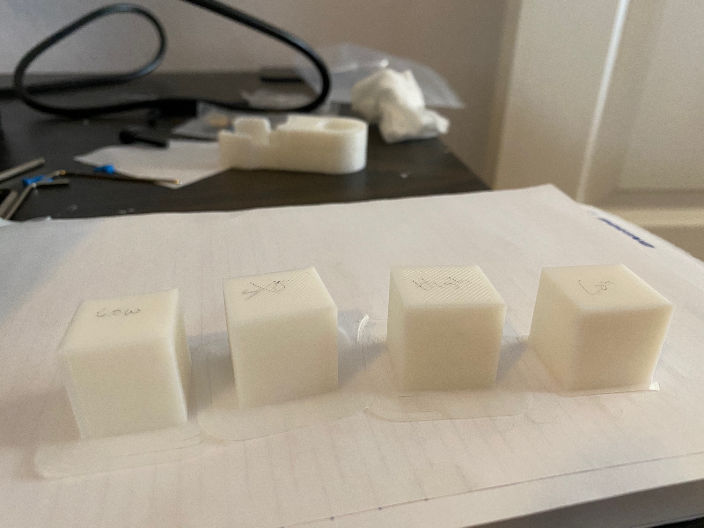
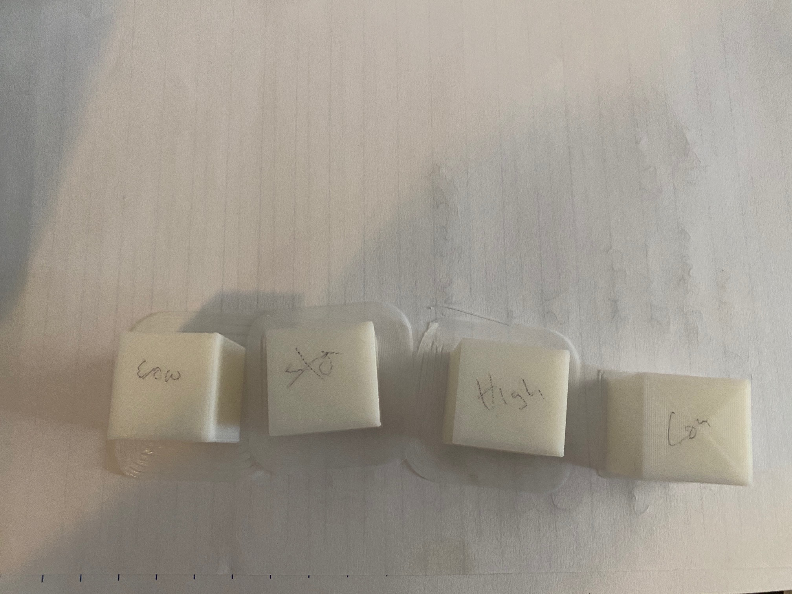
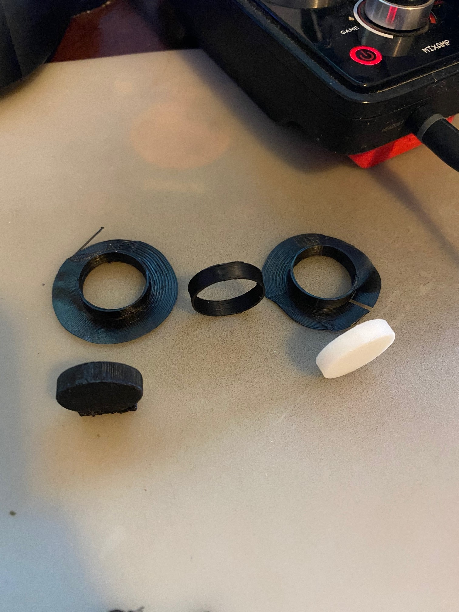
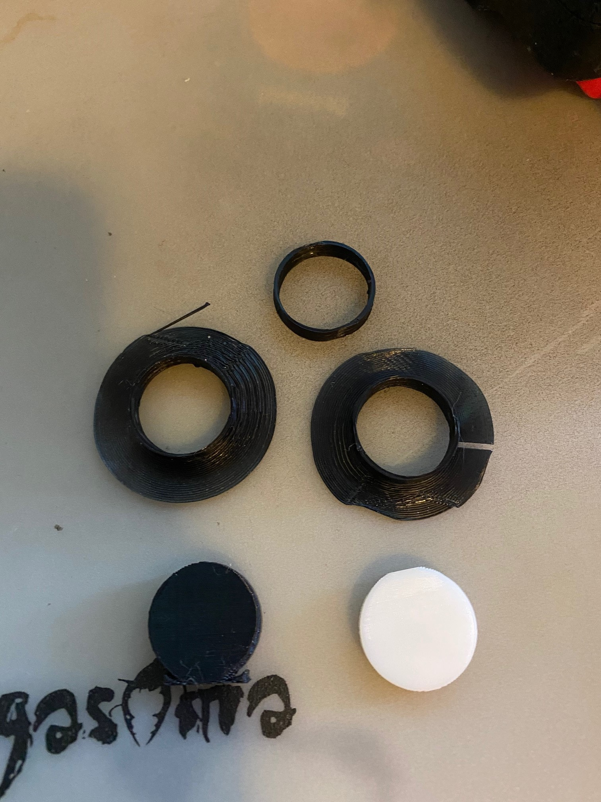
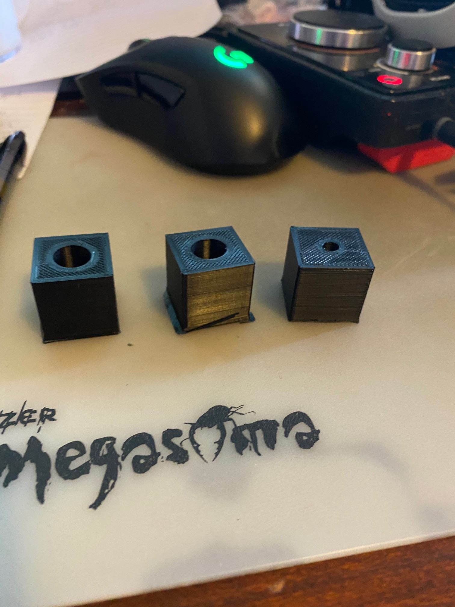
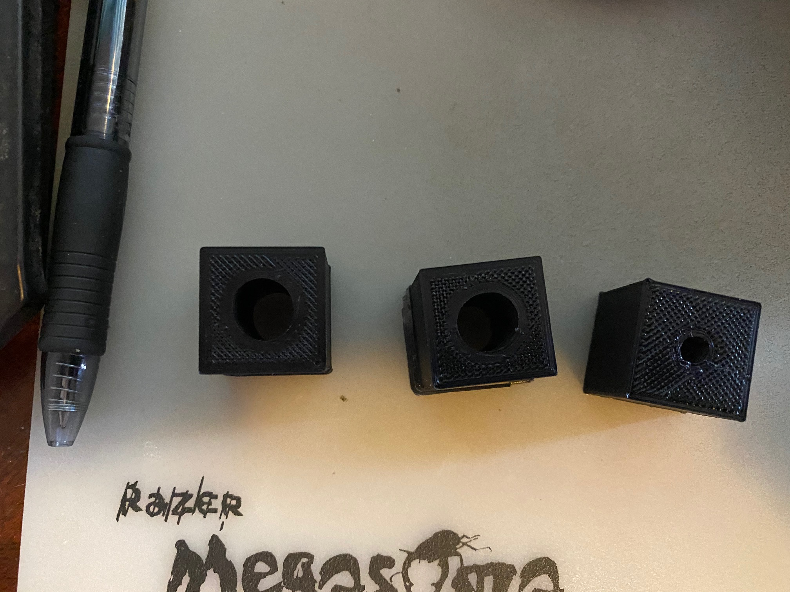

Assignment 2 was a 2 part assignment, Assembling the 3D Printer, and Calibrating it.
Since I had already assembled my printer before starting the Assignment, I'll talk about some intresting experiences I had with the Process.
First I tightened the wheels all the way
Then I used this bedleveling test from thingiverse - Ender 3 Level Test
It took several tries to get it working, even then the axis's were still off and I am trying to calibrate it more closely still.
We then needed to print each of the following, and track the measurements and Time for each print.
Finally, A 20.0mm +/- 0.5mm cube with a 5.0mm +/- 0.5mm hole through it.
Below are all the pics for assignment 2!
 
Cubes 
Cylinders and Tubes 
Cubeholes 